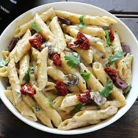

Pasta

Description
Pasta is a traditional Italian dish made with wheat noodles
served with a variety of sauces such as tomato, cream, or pesto.
It is quick to cook and can be customized with vegetables,
cheese, and herbs for a delicious meal.
Ingredients
- 200g pasta
- 1 cup tomato sauce
- 1 chopped onion
- 2 cloves garlic
- 1/2 cup vegetables
- 1/2 cup cheese
- Salt and pepper
Steps
- Boil pasta according to package instructions.
- Heat oil in a pan.
- Cook onion and garlic.
- Add tomato sauce and vegetables.
- Mix the cooked pasta.
- Add cheese and seasoning.
- Serve hot.